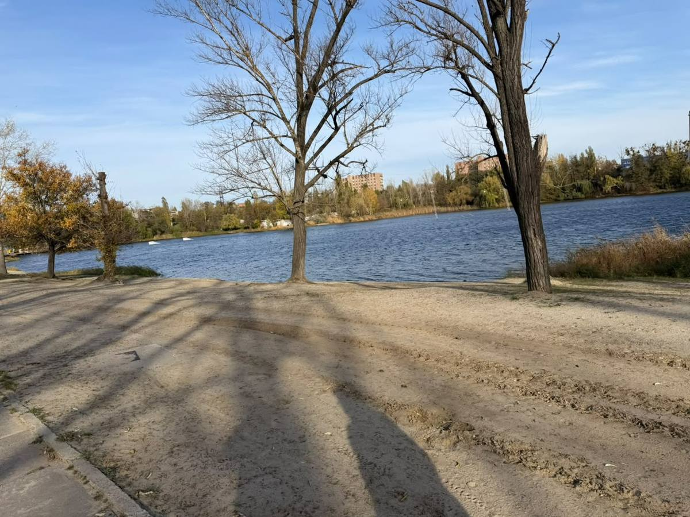
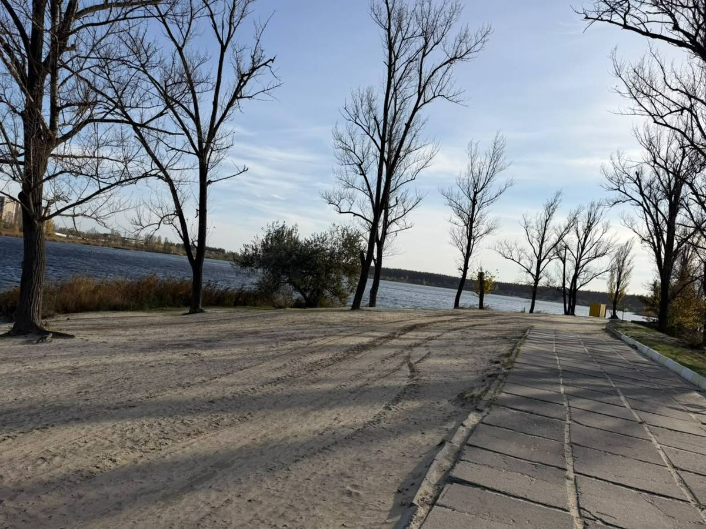

Пляж на Журавлівці
Концепція благоустрою. Складено за анкетою від 30.10.2026 і фотофіксацією ділянки.
Ділянка: від кафе «Червона мавпа» до точки «Пляж Основа». Орієнтовно 200 м завдовжки, 15–30 м завширшки, вода з обох боків. Усі розміри тут приблизні, за супутниковим знімком; перед погодженням потрібна геодезія.
1. Що робимо
2. Генплан
Схема за ескізом замовника на карті. Північ угорі, вхід з півдня з боку дороги. Ліворуч (захід) широкий піщаний берег, праворуч (схід) лісок і тиха вода.
Ліхтарний стовп і дроти залишаються. Очерет біля води частково вичищається, дно прибирається від водоростей.
Ескізи замовника


3. Перелік об'єктів
| Об'єкт | К-сть | Де на плані | Матеріал і вигляд |
|---|---|---|---|
| VIP-альтанки зі шторами | 4 | Захід, біля входу | Каркас зі світлого дерева, лляні штори, настил, низький стіл, м'які подушки, гірлянда по периметру |
| Альтанки звичайні | 5 | Уздовж пляжу | Відкриті, дерев'яні, з лавою і столом, дах із дранки або тканини |
| Будиночки з ночівлею та чаном | 2 | Схід, лісок | Невеликі зруби або каркасні на палях, тераса, дерев'яний чан на дровах, вид на воду |
| Бар | 1 | Схід, у центрі | Стійка з обпаленого дерева, терасна дошка, навіс, барні стільці; гірлянди |
| Кухня або гриль-зона | 1 | За баром | Закритий блок + відкритий гриль, фудтраки поруч |
| Кальянна точка | 1 | Між баром і VIP | Низькі дивани, подушки, вечірня підсвітка |
| Волейбол | 1 | Схід, біля входу | Пісок, нова сітка, лавки для глядачів |
| Дитяча зона | 1 | Схід, біля входу | Дерев'яний майданчик, пісочниця, у тіні |
| Прокат сапів і каяків | 1 | Берег, захід | Стелаж для сапів, невеликий понтон |
| Фотозони | 2 | Мис і пляж | Гойдалка над водою, дерев'яна рама з написом |
| Кабінки для перевдягання | 6 | Біля входу | Дерев'яні, обпалене дерево |
| Душ | 4 | Біля входу | Вуличні, дерев'яний настил |
| Туалет | 2 | Біля входу | Біотуалети в дерев'яному коробі |
| Лежаки | — | Увесь пляж | Дерев'яні, з лляними матрацами, парасолі з натуральної тканини |
4. Види для візуалізації
Для кожного виду беремо реальне фото місця і генеруємо картинку на його основі. Нижче готові промпти (англійською, так генератор працює точніше). Промпт вставляється разом із фото.
ЛітоСвітле деревоЛьонОбпалене деревоГірляндиЛюди на пляжі
Вид 1. Головний пляж із набережної

Edit this photo. Keep the exact location, camera angle, the two big trees, the water and the far shore. Make it summer, bright afternoon. Turn the sand into a tidy city beach: rows of light wooden sun loungers with natural linen cushions and beige canvas umbrellas, a wooden boardwalk path from the promenade to the water, a small wooden pier with a SUP and kayak rack at the shore, a few people relaxing and kids near the water. Light pale wood, linen fabric, some charred-black wood accents (shou sugi ban), string lights hanging between the trees. Clean, calm, premium but simple. Photorealistic, same lens and lighting as the original.
Вид 2. Набережна, вхід на пляж

Edit this photo. Keep the same promenade, trees, curb line and water on the right. Summer day. Along the sandy side add a welcoming beach entrance: a light wooden arch with a small sign, a wooden reception kiosk in pale wood with charred-wood accents, a row of six wooden changing cabins and outdoor showers further along, large wooden planters with grasses and ropes as a soft boundary instead of a fence. Wooden deck walkways leading onto the sand, string lights crossing above the promenade between the trees, people walking in. Natural materials only: pale wood, linen, black charred wood. Photorealistic, same camera.
Вид 3. Зона VIP-альтанок

Edit this photo. Keep the trees, the sand and the water in the background. Summer evening, golden hour. Place four VIP gazebos among the trees: open timber frames of pale wood on wooden decks, white and natural linen curtains tied to the posts, low tables, soft cushions, warm string lights along the roofs, lanterns standing in the sand. Between the gazebos a small hookah lounge with low sofas. A few guests relaxing. Natural materials, pale wood, linen, charred-wood details. Photorealistic, same camera angle and lens.
Вид 4. Усередині VIP-альтанки
Using this location as reference, generate a photorealistic view from inside a VIP beach gazebo looking out at the lake and the trees. Open timber frame of pale wood, wooden deck floor, natural linen curtains gently blown by the wind, a low wooden table with drinks, soft beige cushions and a linen sofa, a small lantern, string lights under the roof. Late afternoon summer light, water sparkling, sand and trees outside. Calm, premium, simple. Same place and vegetation as the photo.
Вид 5. Бар зблизька

Edit this photo. Keep the trees, the water and the far shore. Summer. In the foreground on the sand build a beach bar: a long counter made of charred black wood (shou sugi ban) with a pale wood top, wooden bar stools, a light timber canopy with a reed or shingle roof, a decking floor around it, shelves with bottles, a grill zone next to it, string lights hanging over the deck, a few people at the counter and a bartender. Natural materials, pale wood, linen, black charred wood. Photorealistic, close-up view of the bar, same camera lens.
Вид 6. Будиночки з чанами на боці ліска


Edit this photo. Keep the trees, the quiet water and the reeds. Summer, soft evening light. Place two small guest cabins among the trees on the shore: compact timber cabins on piles, pale wood walls with charred black wood accents, large windows facing the water, each with a wooden terrace and a round wooden hot tub (wood-fired "chan") on the deck, steam rising, lanterns and string lights, a path of wooden decking to the water. Cozy, private, natural. Photorealistic, same camera angle.
Вид 7. Волейбол і дитяча зона

Edit this photo. Keep the trees, the existing poles and the water in the background. Summer day. Make the sandy area a clean beach volleyball court with a new net on the existing poles, rope boundary lines, wooden benches for spectators, people playing. On the left under the trees a small wooden kids' corner: a low wooden play structure, a sandbox and a shade sail in natural linen. Pale wood, linen, charred-wood accents. Photorealistic, same camera.
Вид 8. Мис і фотозона

Edit this photo. Keep the trees, the water and the shoreline. Summer. Remove the yellow metal box. On the sandy cape add a photo spot: a wooden swing hanging from a pale timber frame near the water, a few wooden loungers, a small wooden pontoon with two catamarans and kayaks moored, lanterns standing in the sand, string lights between the trees. People taking photos. Natural materials, pale wood, linen. Photorealistic, same camera angle.
Вид 9. Вечірній вид

Edit this photo. Keep the trees, the sand and the lake with the sunset. Summer evening, sun just setting. Fill the beach with warm life: wooden loungers with linen cushions, open timber gazebos with linen curtains, warm string lights hanging between the trees and over the gazebos, lanterns standing in the sand, soft uplighting on the tree trunks, a beach bar glowing in the distance with a charred-wood counter, people sitting and walking, reflections on the water. Warm, cozy, premium but natural. Photorealistic, same camera.
Вид 10. Генплан згори

Using this satellite image as the exact base, generate a top-down architectural masterplan rendering of a city beach on this narrow spit of land between two lakes. Keep the shape of the land, the central path and the trees. Summer, soft shadows. From south (bottom, entrance) to north (top, cape): entrance with reception and six changing cabins, showers and toilets near the entrance; on the east side a beach volleyball court, a small kids' corner, a bar with kitchen and grill in the middle, and two small guest cabins with round hot tubs on terraces in the wooded part; on the west side four VIP gazebos with linen curtains near the entrance, then a long beach with rows of wooden loungers and umbrellas, five open gazebos, a SUP and kayak rental with a small pier; at the northern cape a photo spot with a swing and a pontoon with catamarans. Wooden deck paths, pale wood, linen, charred-wood accents, string lights. Clean readable masterplan style, slight 3D feel, with short labels.
5. Що треба уточнити
- Водопостачання: чи є підключення або потрібна свердловина.
- Доступна потужність електрики для бару, кухні та освітлення.
- Зона «М» на мисі: що саме там планується.
- Розмір альтанок: на скільки людей кожна VIP і звичайна.
- Назва проєкту, логотип і фірмові кольори для вивіски та фотозон.
- Чи входить у нашу територію плиткова доріжка повністю.
- Режим роботи і сезонність бару взимку.
Фото ділянки: 30.10.2026. Ескізи: замовник.